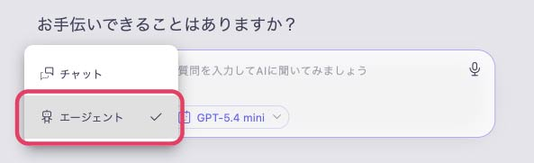
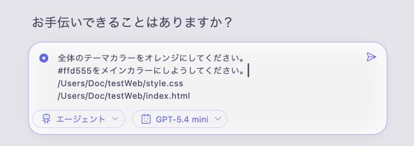
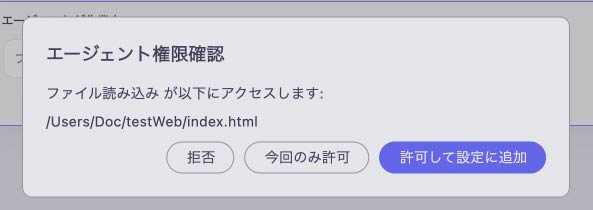
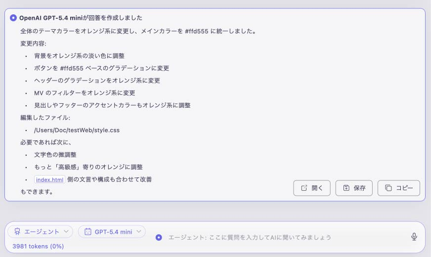
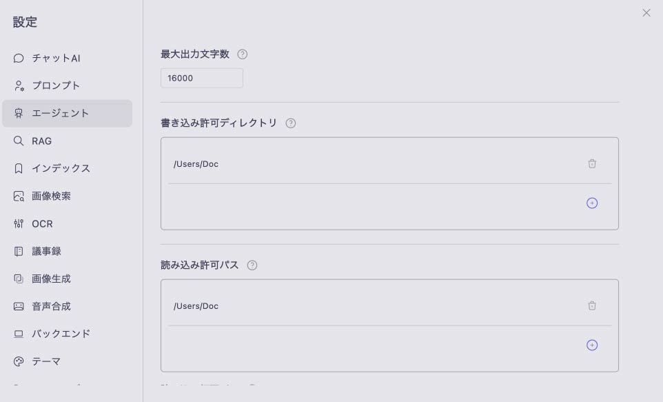
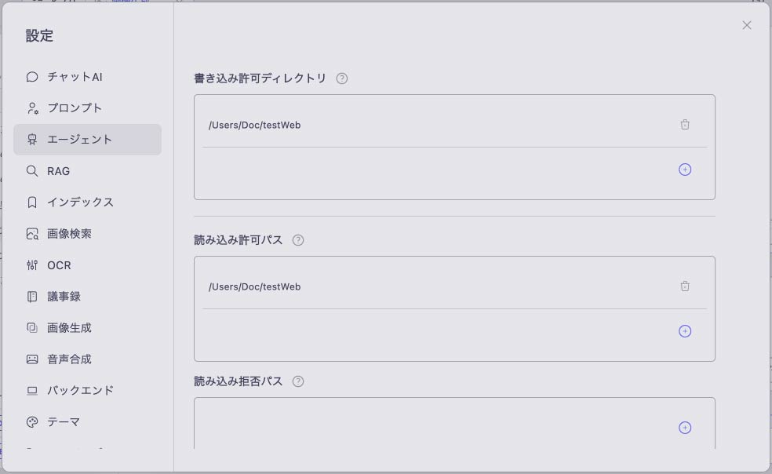

AIエージェントを利用する
AIエージェントに必要なファイルへのアクセス権を与えることで、あなたに代わってファイルを直接編集させることができます。
設定画面からアクセス権の範囲をあらかじめ指定できるため、安全にファイルの編集を依頼することが可能です。
エージェントモードで使用可能なLLM
エージェントモードは、OpenAI、Claude、Gemini、Gemma4で使用可能です。
Azure、OpenRouter、Gemma4以外のローカルLLMでは使用できません。
ファイルを指定してAIエージェントに編集を依頼する
アプリモードはチャットにして下さい。
クエリバーにあるモードを「チャット」から「エージェント」に変更します。 ※アプリのモードが「チャット」になっていることを確認してから操作を行ってください。

クエリバーに「編集してほしい内容」と「該当ファイルのディレクトリ（パス）」を入力します。
便利な機能: エクスプローラー（Windows）またはFinder（Mac）からファイルをクエリバーへ直接ドラッグ＆ドロップすると、ディレクトリが自動で入力されます。

送信ボタンをクリックします。
エージェントにファイル権限を許可していない場合は「エージェント権限確認」のポップアップが表示され、ファイルへのアクセスを求められます。表示されたパスを確認し、問題なければ許可してください。

ファイルの書き込みが許可されると、エージェントがPC内のファイルを直接修正します。

エージェントの設定を変更する
設定画面内の「エージェント」項目から、AIエージェントに関する詳細な設定を変更することができます。

最大反復回数 : 一回の質問に対して、エージェントが最大で何回、思考するかの最大値を定義します。複雑なタスクを行う場合は大きくします。
最大出力文字数 : エージェントが使用する各ツールの最大出力文字数を指定します。ファイル読み込みツールでは、このサイズを超えるファイルは分割して読み込まれます。
コンテキストの大きいクラウドLLMを使用する場合、この値を大きくすることで動作速度を改善することが可能です。
なお、思考ループ中は、全ツールの出力を保持しますが、LLMのコンテキスト長の75%を超えた場合はコンパクションによって圧縮されます。
エージェントのファイル権限を管理する
AIエージェントによるPC内や外部クラウドレポジトリ上のファイルへの「読み込み」「書き込み」権限を管理することで、より安全にAIエージェント機能を利用することができます。

※「エージェント権限確認」画面でアクセスを許可し、「設定に追加」を選択した場合も、自動的にこちらの設定へ反映されます。
書き込み許可ディレクトリ : ここに登録されたディレクトリ内のファイルに対して、エージェントへの書き込みを許可します。
読み込み可能パス : ここに登録されたパスのファイルに対して、エージェントへの読み込みを許可します。
読み込み拒否パス : ここに登録されたパスのファイルに対して、エージェントへの読み込みを拒否（制限）します。
Fetch許可URL : GitHubなどの外部クラウドレポジトリと連携し、AIエージェントにデータの同期・取得（Fetch）を許可する場合は、対象のレポジトリURLを登録してください。
Fetch拒否URL : AIエージェントによるFetchを拒否したいURLがある場合は、対象のレポジトリURLを登録してください。
MCPサーバを追加する
設定画面の「エージェント」項目からMCPサーバを追加すると、AIエージェントでサーバのツールを利用できます。
- 「MCPサーバ」の追加ボタンをクリックし、「MCPサーバを追加」画面を開きます。
- 以下の例を入力します。
- サーバ名：Microsoft Docs
- URL：https://learn.microsoft.com/api/mcp
- カスタムヘッダが必要なサーバを追加する場合は、「カスタムヘッダ」に「名前: 値」の形式で1行に1組ずつ入力します。この例では入力不要です。
- ツールの実行前に確認したい場合は、「実行毎に確認ダイアログを表示」にチェックを入れます。
- 「保存」をクリックします。保存するとサーバに接続します。ツールの有効・無効は、接続後に編集画面で設定できます。